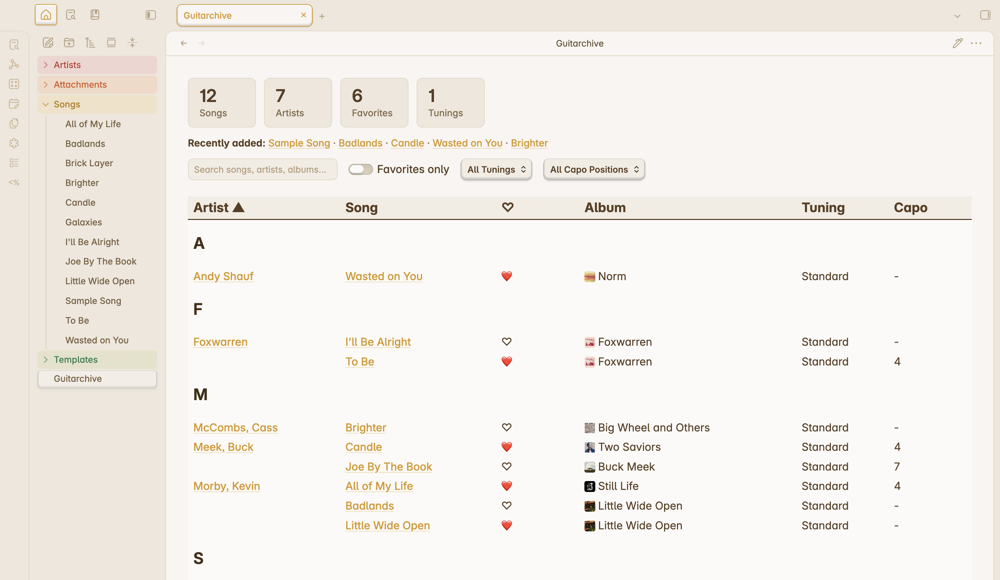

Live index dashboard
Stat tiles, recently-added songs, and a searchable, sortable table of every song — text search across song, artist, album, and genre, plus tuning, capo, and favorites filters, with cover-art thumbnails and one-click favoriting.
An Obsidian starter vault
A personal songbook that organizes itself: plain-Markdown tab and chord notes, a live searchable index, one-hotkey metadata from MusicBrainz, and artist pages that build themselves.
No GitHub account needed for the zip — unzip it and open the folder in Obsidian.

Stat tiles, recently-added songs, and a searchable, sortable table of every song — text search across song, artist, album, and genre, plus tuning, capo, and favorites filters, with cover-art thumbnails and one-click favoriting.
Fill in Artist and Album, hit a hotkey, and pull release year, genre, label, duration, cover art, and streaming links from MusicBrainz and the Cover Art Archive.
Every artist gets a page with song, album, and favorite counts and a live table of their songs — created automatically when you enrich, with an optional one-hotkey Wikipedia bio.
A "detect key from chords" link in the song header analyzes your chord sheet and writes the key to frontmatter — including the sounding key when a capo is set.
Every action is tappable, not hotkey-bound: in-note enrich and key-detect links, and tables that collapse to a compact layout in narrow panes — on mobile and in squeezed desktop splits alike.
Your archive is a folder of text files; every view is a query over frontmatter. No database, no lock-in — grep it, sync it, version it however you like.


Download the latest release and unzip it wherever you keep your notes — no GitHub account required. Prefer git? Use this template on GitHub and clone yours, or clone the repo directly.
Open folder as vault, enable community plugins, and install the four the vault is pre-configured for: Templater, Datacore, Chord Sheets, and Vextab (the last two are optional).
Create a note in Songs/, fill in Artist and Album,
add your tab, and hit Cmd/Ctrl+Shift+E
to enrich. The index and artist page take care of themselves.
The repo ships no song content — your own transcriptions of copyrighted songs belong in your private vault, not a public fork. Fetched cover art stays © its rights holders, with attribution stored on every image.